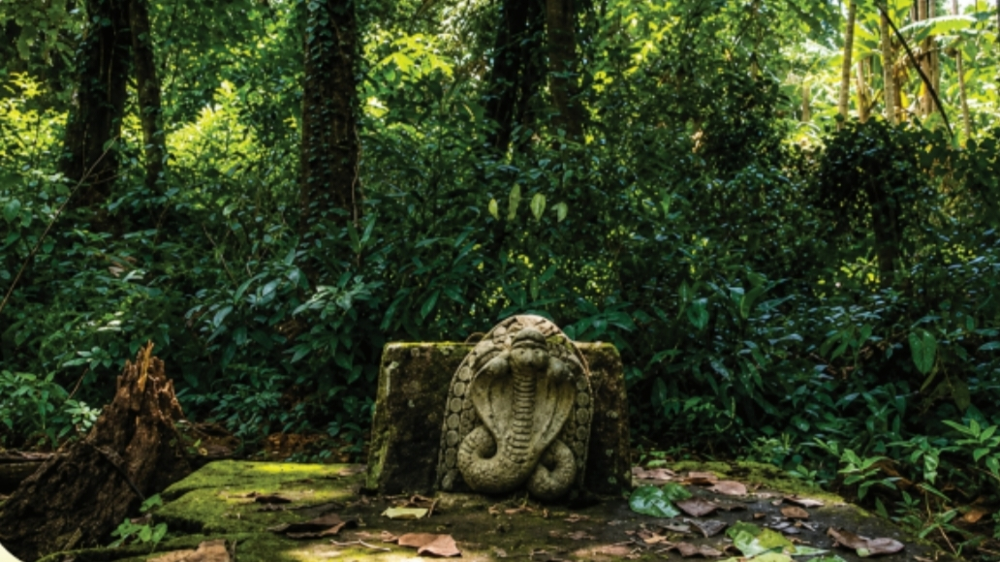
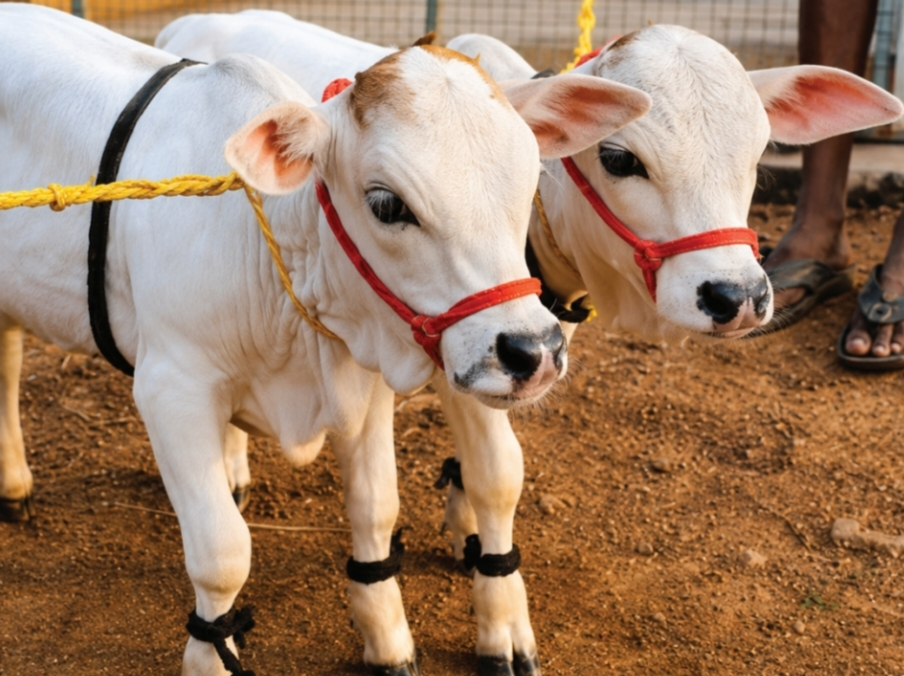

നാഗക്കാവ് - നാഗക്കോട്ട
ഉഗ്രശക്തിശാലികളായ നാഗദൈവങ്ങൾ കുടികൊണ്ട നാഗക്കോട്ട, ക്ഷേത്രത്തിന്റെ ഒരു പ്രധാന ശക്തിവിശേഷമായിരുന്നു. അപൂർവ്വമായ ഔഷധസസ്യങ്ങളാൽ സമ്പുഷ്ടമായ ഈ കാവ്, സൽസന്താന ലബ്ധിക്കും മംഗല്യഭാഗ്യത്തിനുമായി ഭക്തർ പ്രത്യേകം വഴിപാടുകൾ നടത്തിയിരുന്ന സ്ഥലമാണ്. നാഗങ്ങൾ സ്വസ്ഥമായി വാണിരുന്ന കിണറിന്റെ അവശിഷ്ടങ്ങൾ ഇന്നും ഇവിടെ കാണാം. പൗരാണിക പ്രൗഢിയോടെ കിണർ നവീകരിക്കാനും നാഗക്കോട്ട പുനർനിർമ്മിക്കാനും ക്ഷേത്ര സേവാസമിതി ലക്ഷ്യമിടുന്നു.

ക്ഷേത്രക്കുളം
പുതുക്കിപ്പണിത ശ്രീകോവിലിനു മുന്നിലായി സ്ഥിതി ചെയ്യുന്ന ക്ഷേത്രക്കുളം പഴയകാലത്തെ പ്രൗഢിയോടെ പുനർനിർമ്മിക്കാൻ ലക്ഷ്യമിടുന്നു. ക്ഷേത്രത്തിനും ക്ഷേത്രത്തട്ടകത്തിനും ഉപയോഗപ്രദമാവുന്ന ഈ കുളം, നാടിന്റെ വരൾച്ച മാറ്റാൻ ഉപകരിക്കുന്ന ഒരു മഹാസംരംഭം കൂടിയാണ്. ഓരോ ഭക്തനും ഈ നിർമ്മാണത്തിൽ പങ്കാളിയാവാൻ സാധിക്കും.

കാമധേനു ഗോശാല
ഗോവർദ്ധന പർവ്വതത്തെ കുടയാക്കി ഭൂമിയെയും പ്രകൃതിയെയും സർവ്വചരാചരങ്ങളെയും കാത്ത ഭഗവാന്റെ ചുറ്റും അനുസരണയോടെ ചെവിയാട്ടി നിൽക്കുന്ന പശുക്കിടാങ്ങൾ കണ്ണിനു കുളിർമ്മ നൽകുന്ന കാഴ്ചയാണ്. ഭാരതം ഗോമാതാവിനെ പൂജിക്കുന്ന അതേ ഭക്തിയോടെ, ക്ഷേത്ര പരിസരത്ത് ഒരു ഗോശാല സ്ഥാപിക്കാനും പശുപരിപാലനത്തിലൂടെ പഞ്ചഗവ്യാധിഷ്ഠിത പൂജാക്രമങ്ങൾ പരിപോഷിപ്പിക്കാനും ക്ഷേത്ര സേവാസമിതി ലക്ഷ്യമിടുന്നു.

വേദപഠനശാല
ക്ഷേത്ര പൂജാരികളെ കിട്ടാൻ ഏറെ പ്രയാസപ്പെടുന്ന വർത്തമാന കാലത്ത്, മുത്തശ്ശ്യമ്മ ക്ഷേത്രത്തോട് അനുബന്ധിച്ച് ഒരു ഗുരുകുല സമ്പ്രദായ വേദപഠനശാല സ്ഥാപിക്കാൻ ആലോചനയുണ്ട്. ജാതീയമായ വേർതിരിവുകൾക്ക് ഇടം നൽകാതെ, വിശ്വാസിയായ ഏതൊരു ഹിന്ദുവിനും ഈ വേദപഠനം പ്രയോജനപ്പെടുത്താൻ സാധിക്കുന്ന വിധമാണ് പദ്ധതി വിഭാവനം ചെയ്യുന്നത്.

ജന നക്ഷത്ര വൃക്ഷവനം
ശ്രീ പൂകുന്നത്ത് കാട്ടുമാടം മുത്തശ്ശ്യമ്മ ക്ഷേത്രം ഏറെ പ്രാധാന്യത്തോടെ നടപ്പിൽ വരുത്താൻ ഉദ്ദേശിക്കുന്ന ഒരു പദ്ധതിയാണ് ജനനക്ഷത്ര വൃക്ഷവനം. ഭാരതീയ ജ്യോതിഷത്തിൽ അശ്വതി മുതൽ രേവതി വരെയുള്ള 27 നക്ഷത്രങ്ങളിൽ ഓരോ നക്ഷത്രത്തിനും ഓരോ വൃക്ഷം കൽപ്പിക്കപ്പെട്ടിട്ടുണ്ട്. ഓരോരുത്തരും അവരവരുടെ ജന്മനക്ഷത്ര വൃക്ഷം നട്ട് പരിപാലിച്ചാൽ ആയുസ്സും ആരോഗ്യവും ഐശ്വര്യവും വർദ്ധിക്കുമെന്നാണ് ഹൈന്ദവ വിശ്വാസം.
ക്ഷേത്ര പറമ്പിനോട് ചേർന്ന് 27 ജനനക്ഷത്ര വൃക്ഷങ്ങളും നട്ടുപിടിപ്പിച്ച് ഓരോ വൃക്ഷത്തിനും പ്രത്യേകം തറകൾ കെട്ടി സംരക്ഷിച്ച് മനോഹരമായ ഒരു നക്ഷത്രവനം ഒരുക്കാൻ ക്ഷേത്രം ലക്ഷ്യമിടുന്നു.
ജന്മനക്ഷത്രവും അതിന്റെ വൃക്ഷവും
നക്ഷത്ര വൃക്ഷം വഴിപാടായി സമർപ്പിക്കാൻ
| ഇനം | തുക (₹) |
|---|---|
| 27 ജനനക്ഷത്ര വൃക്ഷം പ്രതിഷ്ഠാ യജ്ഞം | 27,000 |
| ഒരു നക്ഷത്ര വൃക്ഷത്തിന്റെ തറ നിർമ്മാണ ചിലവ് | 1,00,000 |
| ഒരു വൃക്ഷം പ്രതിഷ്ഠിക്കാനും ആജീവനാന്ത പൂഷ്പാഞ്ജലിക്കും | 3,000 |
| ഒരു വർഷം നക്ഷത്ര പൂജയ്ക്കും മറ്റു വിശേഷാൽ പൂജയ്ക്കും | 1,000 |